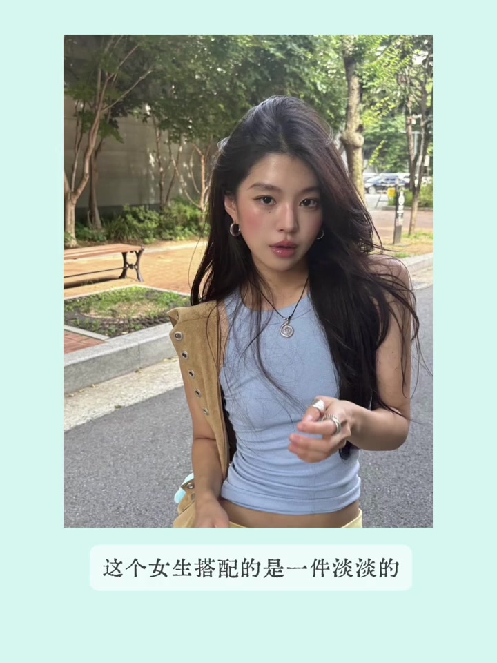
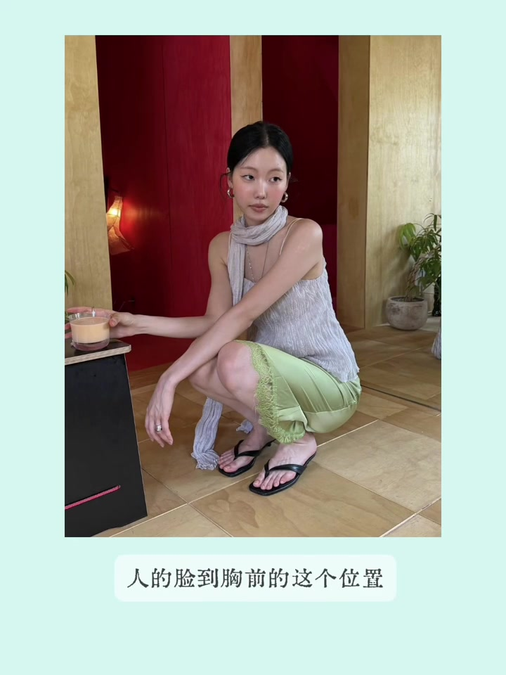
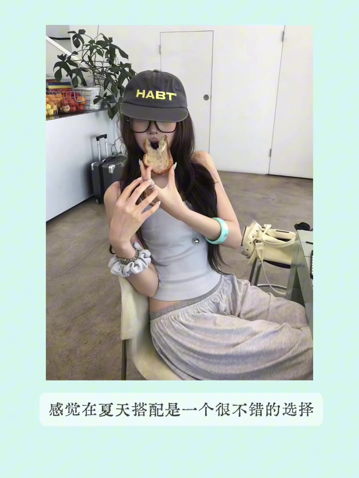
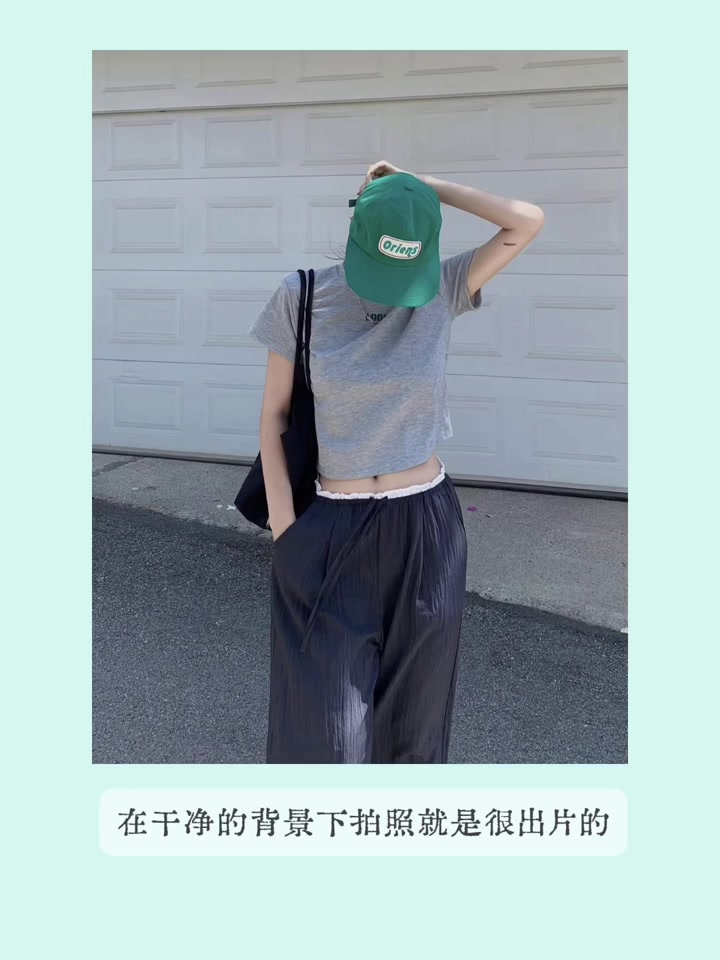
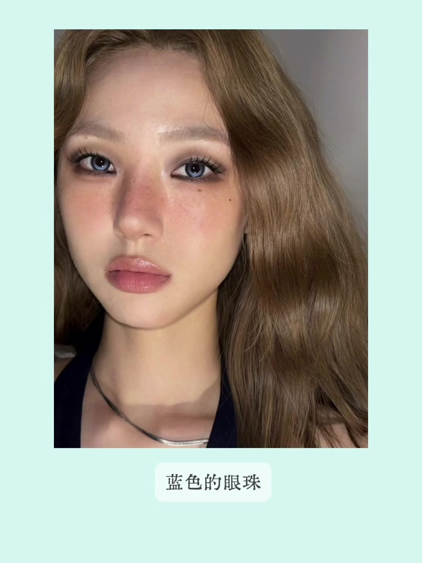
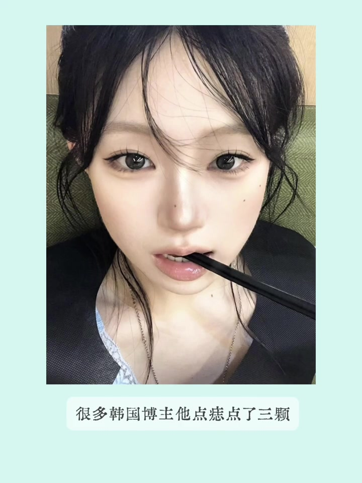
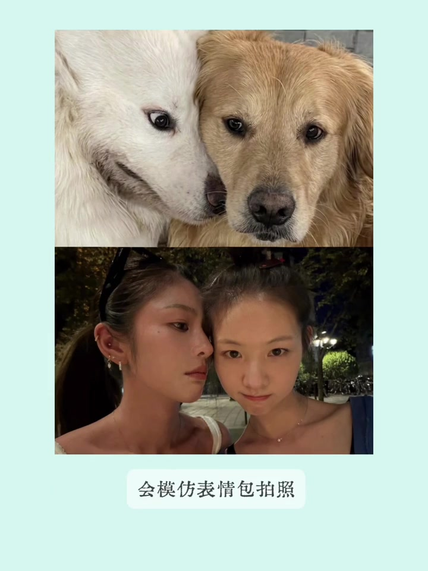

内容要点
视频分享博主最近刷到的一组审美图：从夏日浅蓝小鸡黄、绿裙红背景撞色，到帽子字母与手镯点睛、粗手镯的量感、蓝美瞳与晒伤妆、三颗痣的妆容节奏，再到海边红蓝配色、模仿表情包拍照和深色餐厅花束道具。
知识结构
浅蓝配小鸡黄、绿裙红背景撞色；细吊带时可加围巾或长项链填胸前空白。
帽子小字母与身上配饰做小面积撞色；粗手镯量感大、显手腕细。
蓝美瞳中和晒伤感；口红色系眼下眼线一笔点睛；三颗痣丰富面部留白。
海边红蓝配色；模仿表情包解决合照尴尬；深色餐厅花束包装很出片。
夏天不必只穿基础色：小面积高饱和色块、粗手镯这样的「破坏色」配饰、以及妆容里的一笔眼线或三颗痣，都能让简单穿搭变得有杂志感。
浅蓝 + 小鸡黄：夏日清爽配色
第一张会点开，因为上衣浅蓝色块很清新、很夏天。女生搭配淡淡小鸡黄色裤子，为中和铜锈感又配了挤皮宽肩带的亚麻色包，还有金属元素；包上银色五金与全身银色系配饰统一，黄黑皮姐妹其实也可以大胆尝试彩色穿搭，夏天路幅度高时不一定只选基础色。

绿裙红背景：穿搭与背景撞色
第二张因穿搭和身后背景有撞色：下装绿色与背景红色碰撞。博主个人不一定喜欢人字拖，但这身仍值得参考——穿细吊带且头发扎起时，脸到胸前容易显得空，可加类似今年流行的围巾配饰、长项链或耳饰；妆容上腮红也可打得相对明显，弱化服装款式和发型带来的肩颈空旷感。

帽子字母与青蓝手镯：小面积撞色
第三张因帽子黄色字母和手腕青蓝色手镯形成颜色对话，小图就很亮眼。搭配思路也简单：全身基础色时，可用帽子上小块字母和身上配饰做小面积撞色，拍出来会很好看。今年还流行量感很大的粗手镯，能让手腕显得更细，博主挺想入手，觉得夏天搭配是不错的选择。

粗手镯：破坏色配饰比包更巧
第四张粗手镯搭配真的很妙，尤其适合短发女生：头发短时深色色块也较小，若想加小色块配饰，可选深色包或深色手镯；从审美上看，这只手镯比包包搭配更巧妙。包虽可替换，但少了手镯会多一份温柔、少一点知性和时尚——博主好奇大家有没有同感。

蓝美瞳 + 晒伤妆：中和燥热感
妆容启发之一：博主平时会化晒霜妆，但配深色瞳孔会更燥热；因此想换成偏浅蓝美瞳，中和晒伤感。这位女生整体是淡妆，点睛之笔是用口红色系的眼影画了一条下眼线——让眼妆更干净，甚至有一点楚楚可怜感，妆容也更有呼吸感，之后可以尝试。

三颗痣：给面部留白加点节奏
另一妆容启发是「点痣」：博主一般只在鼻子上点一颗起截断作用，但很多韩国博主会点三颗——鼻子上一颗、外眼角下一颗，以及眉峰到脸颊的垂直线、眼睛到嘴巴中间这块留白处，更丰富。若中庭长或面部留白过多，也可试这种方法。

海边红蓝、表情包拍照与餐厅花束
海边玩可参考女生身上蓝条纹与腮红红色的搭配，戴腮红色帽子或小包会很出片。Instagram 上流行的模仿表情包拍照，适合跟闺蜜出去玩或聚会，能解决多人合照不知道摆什么姿势的尴尬。最后是在印记上刷到的花束——包装挺好看，适合深色背景、色调较深的餐厅，订这种包装会很出片。
